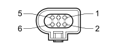

N075 INTEGRATED THROTTLE CASING ACTUATOR (ENGINE)
- Path
- Electrical equipment > 3 CONNECTORS > N ELECTRIC MOTORS AND ACTUATORS > N075 INTEGRATED THROTTLE CASING ACTUATOR > N075 INTEGRATED THROTTLE CASING ACTUATOR (ENGINE)
- Kind
- connector pinout (pin -> wire colour -> other end)
- Applies to
- engines: 1.8; all production periods
- Interactive page
- https://sloeber94.github.io/elrnDB-fCrm/en/#/194005394
Applies to: engines: 1.8; all production periods

Wiring | Colour |
|---|---|
_ |
Pin | Cable | Destination | |||
|---|---|---|---|---|---|
Sec.. | Colour | Node | Connect. | Pin | |
1 | 0,5 | GL (yellow with blue stripe) | 9 | ||
2 | 0,5 | A (light blue) | 41 | ||
3 | 1 | RZ (red with violet stripe) | X | 31 | |
32 | |||||
4 | 0,5 | SG (pink with yellow stripe) | 8 | ||
5 | 1 | BZ (white with violet stripe) | X | 47 | |
48 | |||||
6 | 0,5 | ZN (violet with black stripe) | 40 | ||